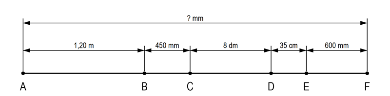
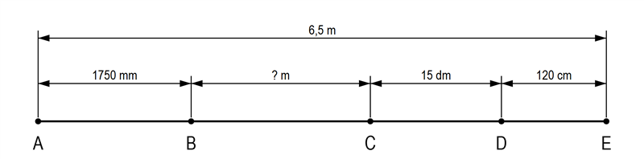
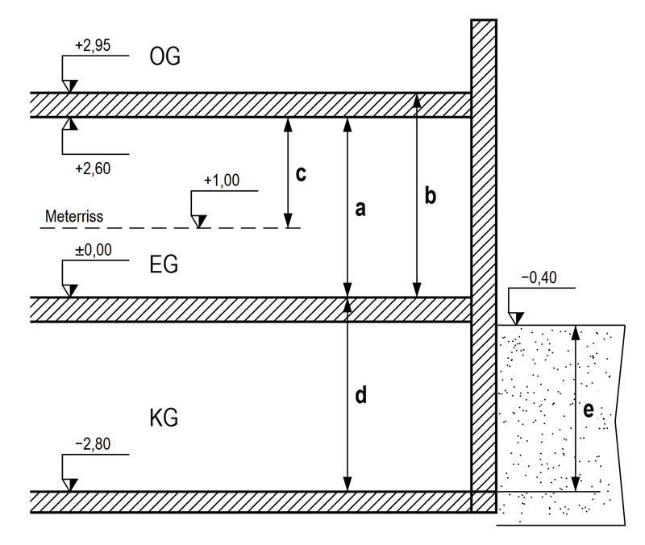
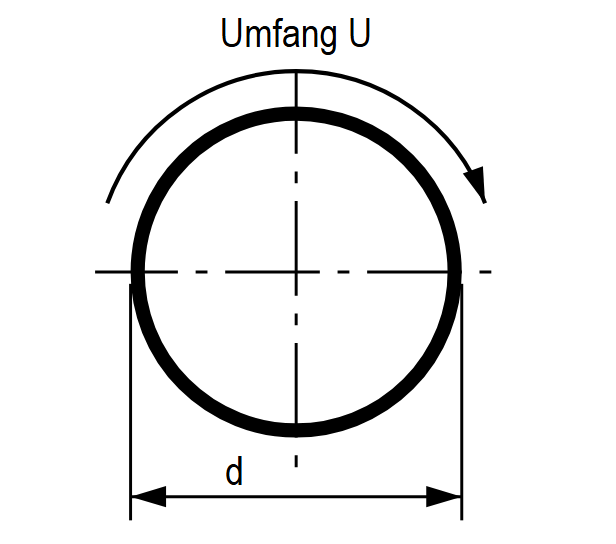
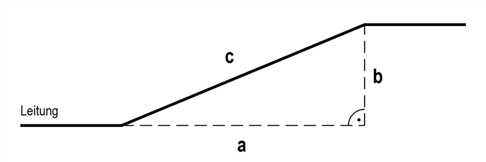
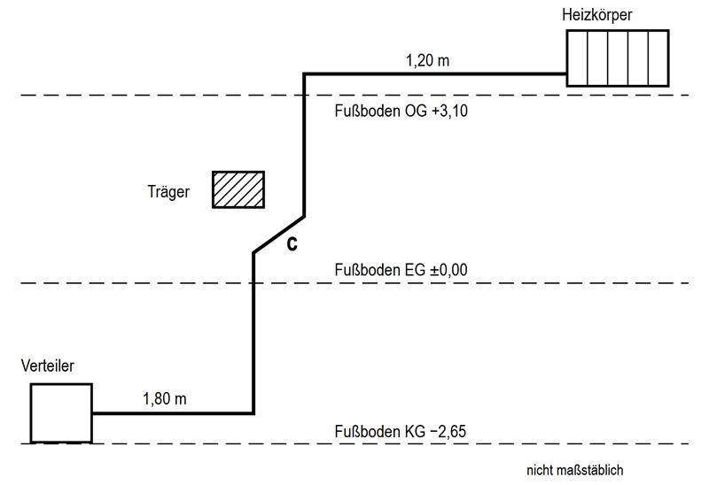

Längenberechnung
Heute lernst du: Längen umrechnen, Strecken zusammenzählen, Höhen aus einem Plan ablesen und den Umfang von einem Rohr berechnen.
So arbeitest du: Lies zuerst den grauen Infokasten. Mach dann die Aufgaben darunter. Die Antworten findest du im Infokasten. Fertig? Tippe bei jeder Aufgabe auf „Prüfen“. Bessere deine Fehler aus.
Die Kästen mit Strichellinie und ★★★ („Mehr wissen“ und „Vertiefung“) sind erweiterte Aufgabenstellungen.
Infokasten A: Die Längeneinheiten
|
Die Haupteinheit für Längen ist das Meter (m). Auf der Baustelle brauchst du auch kleinere und größere Einheiten: km = Kilometer m = Meter dm = Dezimeter cm = Zentimeter mm = Millimeter |
| Einheit | So viel ist das | Beispiel auf der Baustelle |
|---|---|---|
| 1 km | = 1000 m | Wasserleitung zwischen zwei Orten |
| 1 m | = 10 dm | Länge von einem Rohr, Raumhöhe |
| 1 dm | = 10 cm | wird selten verwendet. Achtung: 1 dm = 100 mm |
| 1 cm | = 10 mm | Höhe von einem Waschtisch, Abstand zwischen Rohren |
| 1 mm | kleinste Einheit auf der Baustelle | Durchmesser und Wandstärke von einem Rohr |
|
Merke: 1 m = 10 dm = 100 cm = 1000 mm Von m bis mm ist jeder Schritt mal 10. Von km zu m ist der Schritt mal 1000. |
Aufgabe 1 ★ leicht
Lies Infokasten A. Welche Einheit passt am besten? Schreib den Buchstaben ins Kästchen.
Achtung: Ein Buchstabe kann öfter vorkommen.
|
|
Aufgabe 2 ★ leicht
Lies Infokasten A. Schreib die richtige Zahl in das Feld.
| 1 m | = | dm | = | cm | = | mm |
| 1 km | = | m | |
| 1 dm | = | cm | |
| 1 cm | = | mm |
Infokasten B: Umrechnen mit der Stellentafel
|
Mit der Stellentafel (Tabelle mit den Einheiten) rechnest du ganz leicht um. Jede Ziffer bekommt ein eigenes Kästchen. Beispiel: 2,35 m. Die 2 kommt unter m. Die Ziffern nach dem Komma kommen in die Kästchen rechts daneben. |
| km | m | dm | cm | mm | abgelesen | ||
|---|---|---|---|---|---|---|---|
| 2 | 3 | 5 | 0 | 2350 mm | |||
| 0 | 7 | 0 | 0 | 0,7 m = 700 mm |
|
Merke 1: In die kleinere Einheit (z. B. m → mm) Das Komma geht nach rechts. Die Zahl wird größer. Fehlt eine Ziffer, schreibst du hinten eine 0 dazu: 0,7 m = 700 mm 1,3 m = 1300 mm |
|
Merke 2: In die größere Einheit (z. B. mm → m) Das Komma geht nach links. Die Zahl wird kleiner. Fehlt eine Ziffer, schreibst du vorne Nullen dazu: 3400 mm = 3,4 m 42 cm = 0,42 m 8 mm = 0,008 m |
|
Wie viele Stellen? m ↔ cm: 2 Stellen m ↔ mm: 3 Stellen km ↔ m: 3 Stellen |
Aufgabe 3 ★ / ★★
Lies Infokasten B. Rechne um. Schreib das Ergebnis in das Feld.
Tipp: Zeichne dir die Stellentafel auf ein Schmierblatt.
a) ★ leicht
| 4 m | = | cm | 300 cm | = | m | |||
| 6 cm | = | mm | 850 mm | = | cm | |||
| 2,5 m | = | mm | 1,8 dm | = | cm |
b) ★★ mittel
| 0,6 m | = | mm | 36 cm | = | m | |||
| 1,25 m | = | cm | 75 mm | = | m | |||
| 2,4 km | = | m | 1450 m | = | km | |||
| 3,5 cm | = | mm | 9 mm | = | cm |
Aufgabe 4 ★★ mittel
Ein Lehrling hat umgerechnet. Nicht alles stimmt.
Kreuze an: richtig (R) oder falsch (F). Ist es falsch, schreib die richtige Zahl dazu.
| Rechnung vom Lehrling | R | F | richtig ist |
|---|---|---|---|
| 2,6 m = 260 cm | |||
| 0,8 m = 80 mm | |||
| 45 mm = 4,5 cm | |||
| 1500 mm = 15 m | |||
| 0,05 km = 50 m |
Infokasten C: Zoll
|
Manche Rohre und Gewinde misst man in Zoll (englisch: inch). Das Zeichen für Zoll ist ″ (zwei kleine Striche). Merke: 1″ = 25,4 mm So rechnest du Zoll in mm um: 1. Schreib den Bruch als Kommazahl:
2. Rechne mal 25,4. Beispiel: ½″ = 0,5 · 25,4 mm = 12,7 mm |
|
Mehr wissen ★★★ • Die Gewinde wurden zuerst in England genormt, 1841 von Sir Joseph Whitworth. Darum misst man Gewinde in Zoll. • Früher hat die Zollangabe den Innendurchmesser vom Rohr bezeichnet. Heute ist sie nur noch ein Name. • Ein Gewinderohr 1″ ist außen 33,7 mm dick, nicht 25,4 mm. Die echten Maße stehen in der Rohrtabelle. |
Aufgabe 5 ★★ mittel
Lies Infokasten C. Rechne die Zoll in mm um. Die erste Zeile ist ein Beispiel.
Achtung: Hier rechnest du nur die Zahl um. Ein echtes Gewinderohr ist dicker (siehe „Mehr wissen“).
| Zoll | als Kommazahl | Rechnung | Ergebnis |
|---|---|---|---|
| 3½″ | 3,5 | 3,5 · 25,4 mm | 88,9 mm |
| 2″ | |||
| ¾″ | |||
| 1¼″ | |||
| 1½″ | |||
| 2½″ |
Infokasten D: Strecken berechnen
|
Eine Rohrleitung besteht oft aus mehreren Stücken. Die Maße stehen manchmal in verschiedenen Einheiten. So rechnest du: 1. Rechne alle Maße in die Einheit um, die gefragt ist. 2. Schreib die Formel an, z. B. AD = AB + BC + CD 3. Setz die Zahlen mit Einheit ein und rechne aus. 4. Unterstreiche das Ergebnis mit Einheit doppelt. Beispiel in mm: AD = 0,5 m + 30 cm + 200 mm = 500 mm + 300 mm + 200 mm = 1000 mm |
|
Ein Stück fehlt? Dann rechnest du: Gesamtlänge minus alle bekannten Stücke. Beispiel: BC = AD − AB − CD Kontrolle: Alle Stücke zusammen müssen wieder die Gesamtlänge ergeben. |
Aufgabe 6 ★ leicht
Das Bild zeigt eine Kaltwasserleitung von A bis F.

a) Lies Infokasten D. Rechne alle Maße in mm um.
| Stück | Maß im Bild | in mm |
|---|---|---|
| AB | 1,20 m | |
| BC | 450 mm | |
| CD | 8 dm | |
| DE | 35 cm | |
| EF | 600 mm |
b) Wie lang ist die ganze Leitung von A bis F? Rechne in mm.
Tipp: Zähl alle Stücke von A bis F zusammen. Unterstreiche das Ergebnis doppelt.
| Formel: AF = | |
| Einsetzen: AF = | |
| Ergebnis: AF = |
c) Wie lang ist die Leitung in m?
| AF = |
Aufgabe 7 ★★ mittel
Die Leitung von A bis E ist 6,5 m lang. Das Stück BC fehlt.

a) Lies Infokasten D. Rechne die Maße in m um.
| Stück | Maß im Bild | in m |
|---|---|---|
| AB | 1750 mm | |
| CD | 15 dm | |
| DE | 120 cm |
b) Wie lang ist das Stück BC? Rechne in m.
| Formel: BC = | |
| Einsetzen: BC = | |
| Ergebnis: BC = |
c) Kontrolle: Zähl alle 4 Stücke zusammen. Kommt 6,5 m heraus?
Infokasten E: Rohrstangen bestellen
|
Viele Rohre bekommst du in Stangen, z. B. 5 m lang. Wie viele Stangen brauchst du? 1. Rechne die Länge der Leitung in m um. 2. Rechne: Länge der Leitung : Länge einer Stange 3. Immer aufrunden! Du kannst nur ganze Stangen kaufen. Beispiel: 33 m : 5 m = 6,6 → Du bestellst 7 Stangen. |
Aufgabe 8 ★★ mittel
Zu einem neuen Einfamilienhaus wird eine Wasserleitung verlegt. Die Künette (Graben für das Rohr) ist 1280 cm lang. Die Rohrstangen sind 5 m lang.
Lies Infokasten E. Wie viele Stangen musst du bestellen?
Immer aufrunden! Beispiel: 7,2 Stangen → du bestellst 8 Stangen.
| a) Länge der Leitung in m: | |
| b) Rechnung: | |
| c) Ich bestelle: | Stangen |
d) Wie viel Meter Rohr bleiben übrig?
Tipp: Wie viel Meter Rohr hast du bestellt? Zieh davon die Länge der Leitung ab.
Infokasten F: Höhen im Plan
|
Im Plan stehen Höhen als Höhenkoten (Dreieck mit einer Zahl). Die Zahl ist die Höhe in Meter. • ±0,00 ist der fertige Fußboden im Erdgeschoß (EG). • Plus (+) heißt: höher als ±0,00. Minus (−) heißt: tiefer als ±0,00. • Der Meterriss ist eine Linie an der Wand, genau 1 m über dem fertigen Fußboden (+1,00). |
|
So rechnest du den Höhenunterschied: • Beide Koten plus: große Zahl minus kleine Zahl. +2,40 und +1,00 → 2,40 − 1,00 = 1,40 m • Eine Kote plus, eine minus: Zahlen zusammenzählen. +1,20 und −0,50 → 1,20 + 0,50 = 1,70 m • Beide Koten minus: Lass das Minus weg. Dann große Zahl minus kleine Zahl. −2,10 und −0,30 → 2,10 − 0,30 = 1,80 m • Mit ±0,00: Der Höhenunterschied ist einfach die andere Zahl. |
Aufgabe 9 ★★ mittel
Das Bild zeigt einen Schnitt durch ein Haus. Ein Schnitt sieht aus, als hätte man das Haus in der Mitte aufgeschnitten.
KG = Keller (Kellergeschoß) EG = Erdgeschoß OG = Obergeschoß (1. Stock)

Lies Infokasten F. Wie groß sind die Maße b bis e? Rechne in cm.
Die erste Zeile ist ein Beispiel. Jedes Maß geht von einer Kote bis zur anderen. Schau, wo die Pfeile aufhören.
Tipp: Beide Koten minus? Lass das Minus weg. Dann große Zahl minus kleine Zahl.
| Maß | obere Kote | untere Kote | Rechnung in m | in cm |
|---|---|---|---|---|
| a | +2,60 | ±0,00 | 2,60 − 0 = 2,60 m | 260 cm |
| b | ||||
| c | ||||
| d | ||||
| e |
f) Wie dick ist die Decke zwischen EG und OG, mit dem Fußboden darauf? Rechne in cm.
Tipp: Oben ist der fertige Fußboden OG (+2,95). Unten an der Decke steht +2,60.
| Rechnung: |
Infokasten G: Der Umfang von einem Rohr
|
Der Umfang U ist die Länge einmal rund um das Rohr. Der Außendurchmesser d geht außen quer über das Rohr, durch die Mitte. Formel: U = d · π π (sprich: pi) ist eine feste Zahl. Wir rechnen mit π = 3,14. Beispiel: d = 10 cm → U = 10 cm · 3,14 = 31,4 cm Den Umfang brauchst du später für die Mantelfläche (die Fläche außen am Rohr).  |
Aufgabe 10 ★★ mittel
a) Lies Infokasten G. Rechne den Umfang aus. Rechne mit π = 3,14. Runde auf 2 Kommastellen.
| Rohr | d außen | Rechnung U = d · π | U |
|---|---|---|---|
| Kupferrohr | 22 mm | ||
| Stahlrohr | 48,3 mm | ||
| Kanalrohr | 110 mm | ||
| Rohr mit Dämmung | 15 cm |
b) Ein Lehrling wickelt Klebeband einmal rund um ein Kanalrohr (Rohr für Abwasser). Das Rohr hat d = 160 mm.
Am Ende soll das Band 5 cm überlappen. Das heißt: Das Band liegt dort doppelt.
Wie lang muss ein Stück Band sein? Rechne in cm. Zähl die 5 cm einmal dazu.
| Umfang in mm: | |
| Umfang in cm: | |
| mit Überlappung: |
Infokasten H ★★★ Vertiefung: Die schräge Leitung
|
Manchmal läuft eine Leitung ein Stück schräg. Dann entsteht ein rechtwinkliges Dreieck (ein Dreieck mit einem rechten Winkel, 90°). • a und b sind die zwei kurzen Seiten am rechten Winkel. • c ist die längste Seite. Sie liegt gegenüber vom rechten Winkel. Formel (Satz des Pythagoras): c² = a² + b² → c = √(a² + b²) Beispiel: a = 3 m, b = 4 m → c = √(3² + 4²) = √(9 + 16) = √25 = 5 m Am Taschenrechner: x² = Zahl mal sich selbst, √ = Wurzel. So tippst du das Beispiel: 1. Tippe 3 x² + 4 x² = → Anzeige 25 2. Tippe √, dann die Ans-Taste (letztes Ergebnis), dann = → Anzeige 5 Bei manchen Rechnern tippst du zuerst 25 und dann √. |
Aufgabe 11 ★★★ Vertiefung
Eine Heizungsleitung muss einem Träger ausweichen. Sie läuft ein Stück schräg nach oben.
Die Leitung geht a = 120 cm nach vorne und b = 50 cm nach oben.

Lies Infokasten H. Wie lang ist das schräge Rohrstück c? Rechne in cm.
| Formel: | |
| Einsetzen: | |
| Ergebnis: |
Aufgabe 12 ★★★ Vertiefung: Material für eine Steigleitung
Eine Heizungsleitung geht vom Verteiler im Keller hinauf zu einem Heizkörper im OG. Du sollst das Kupferrohr bestellen.

| Das weißt du |
|---|
| Die Rohrmitte beim Verteiler liegt auf −2,15. |
| Der Anschluss am Heizkörper ist 0,35 m über dem Fußboden OG (+3,10). |
| Im Keller geht die Leitung 1,80 m waagrecht. Im OG geht sie 1,20 m waagrecht. |
| Wegen dem Träger gibt es ein schräges Stück c. Es geht a = 0,60 m hinauf und b = 0,25 m zur Seite. |
| Kupferrohr gibt es in Stangen zu 5 m. |
a) Wie lang ist die ganze Leitung? Plane die Schritte selbst. Schreib jeden Schritt auf.
Tipp: Welche Stücke hat die Leitung? Die senkrechten Stücke sind zusammen so lang wie der Höhenunterschied minus a.
| 1. | |
| 2. | |
| 3. | |
| 4. | |
| 5. |
b) Wie viele Stangen bestellst du? Wie viel Meter bleiben übrig?
c) Ein zweiter Heizkörper braucht 1,50 m Rohr. Reicht der Rest dafür? Kreuze an und begründe.
| ja | nein |
| Begründung: |